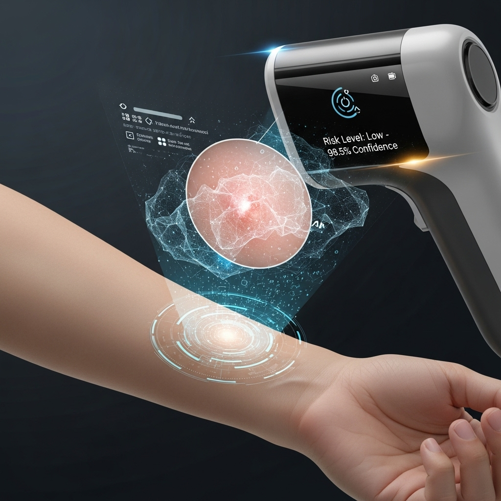
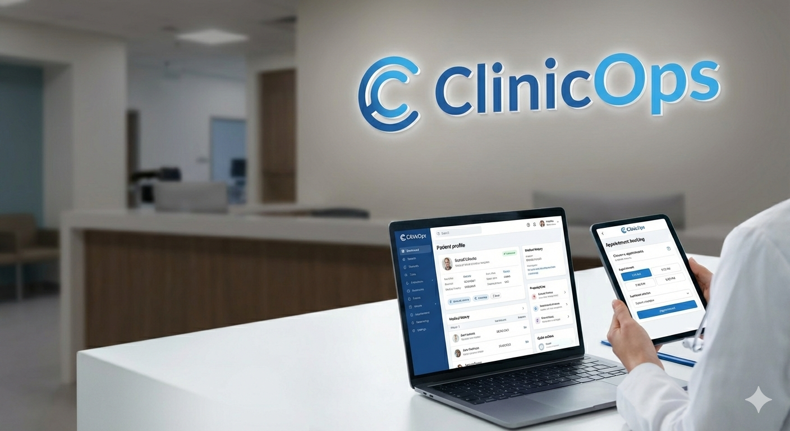

Healthcare AI
Production-ready AI systems for medical imaging, clinical analytics, triage, and predictive healthcare operations — with full MLOps lifecycle and GDPR/EU AI Act compliance.
Produktionsreife KI-Systeme für medizinische Bildgebung, klinische Analytik, Triage und prädiktive Healthcare-Operationen — mit vollständigem MLOps-Lifecycle und DSGVO/EU-AI-Act-Konformität.

AI-powered pre-hospital triage system using Azure Speech, Language, and Vision services. Voice-based symptom collection, real-time clinical NLP, and intelligent triage classification.
KI-gestütztes präklinisches Triage-System mit Azure Speech, Language und Vision. Sprachbasierte Symptomerfassung, klinisches Echtzeit-NLP und intelligente Triage-Klassifikation.

EfficientNet-B7 CNN achieving 85.2% sensitivity for malignant lesion detection on HAM10000. Grad-CAM explainability, GDPR-compliant data handling.
EfficientNet-B7 CNN mit 85,2 % Sensitivität für maligne Läsionserkennung auf HAM10000. Grad-CAM-Erklärbarkeit und DSGVO-konforme Datenverarbeitung.

Hospital stay prediction (R²=0.918) with full lifecycle MLOps. MLflow tracking, DVC versioning, Docker, CI/CD, and real-time drift detection.
Krankenhaus-Aufenthaltsprognose (R²=0,918) mit vollständigem MLOps-Lifecycle. MLflow-Tracking, DVC-Versionierung, Docker, CI/CD und Echtzeit-Drifterkennung.
Medical entity recognition pipeline extracting diagnoses, medications, symptoms, and relations from unstructured clinical notes using Azure AI Language services.
Pipeline zur medizinischen Entitätserkennung, die Diagnosen, Medikamente, Symptome und Relationen aus unstrukturierten klinischen Notizen extrahiert.

Anomaly detection system for clinical health metrics and patient monitoring data. Designed for early warning signals in healthcare operations.
Anomalieerkennungssystem für klinische Gesundheitsmetriken und Patientenüberwachungsdaten. Entwickelt für Frühwarnungen im Klinikbetrieb.